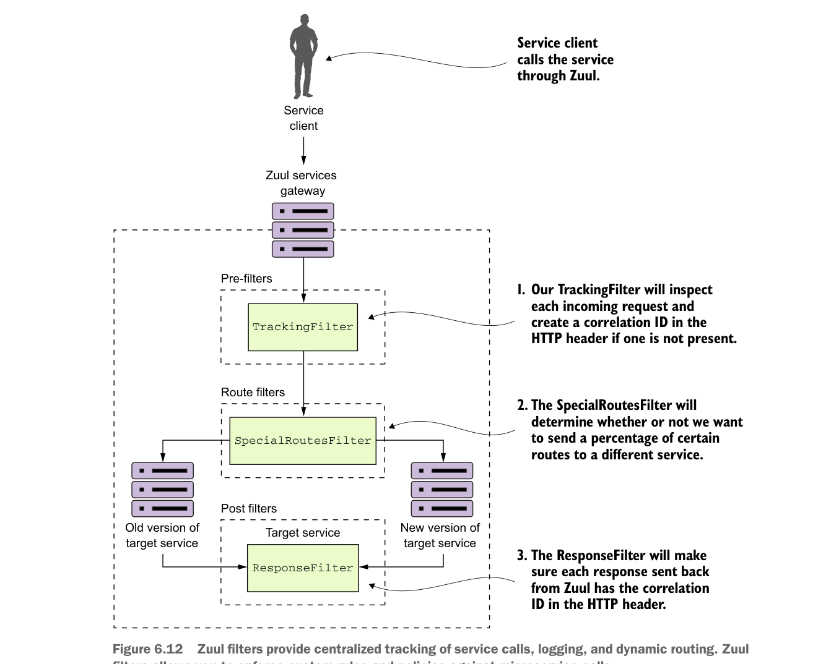

nghĩa là route filter phải hoàn toàn làm chủ việc gọi tuyến động và không thể thực hiện chuyển hướng HTTP.
Nếu route filter không chuyển hướng động người gọi tới một tuyến mới, máy chủ Zuul sẽ gửi tuyến tới dịch vụ được nhắm tới ban đầu.
Sau khi dịch vụ đích đã được gọi, các post filter Zuul sẽ được gọi. Post filter có thể kiểm tra và sửa đổi phản hồi trả về từ dịch vụ được gọi.
Cách tốt nhất để hiểu cách triển khai filter Zuul là xem chúng được dùng thực tế. Vì vậy, trong các mục tiếp theo bạn sẽ xây dựng một pre-, route và post filter rồi chạy các yêu cầu client dịch vụ qua chúng.
Hình 6.12 cho thấy các filter này sẽ phối hợp với nhau như thế nào khi xử lý yêu cầu tới các dịch vụ EagleEye của bạn.

Filter Zuul cung cấp theo dõi tập trung lời gọi dịch vụ, ghi log và định tuyến động. Filter Zuul cho phép bạn thực thi các quy tắc và chính sách tùy chỉnh đối với lời gọi microservice.